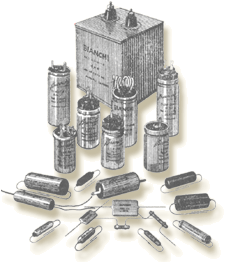
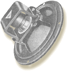

Generalidades
-
Mi especialidad es la parte ELECTRÓNICA de radios, consolas, amplificadores de audio, magnetófonos, antiguas radios de automóviles de 6 o 12 Voltios, a válvulas o transistores, americanas o europeas. etc.
-
Asimismo restauro las partes mecánicas como; giradiscos, cambiadiscos etc, y los muebles de los aparatos, aunque esto último, sólo hasta cierto punto, pues no soy ebanista. Para la mejor presencia posible, la limpieza se efectúa desmontando completamente, pieza a pieza, el mueble, dial (incluyendo el cristal), botones, etc.
-
En aparatos que funcionaban a 125v, convierto su fuente de alimentación para 230v.
- Hago notar que por REAL DECRETO 842/2002, DE 2 DE AGOSTO, la tensión nominal de la red de distribución domiciliaria pasa de 220v a 230v.
Distinción entre Reparación y Restauración de una radio.
En el primer caso, el objetivo es simplemente lograr que la radio capte y reproduzca en el altavoz las emisoras de las ondas para las que está fabricada.

En el caso de la Restauración, además, se debe lograr el objetivo utilizando en lo posible, los materiales que estaban en uso en la fecha de fabricación del aparato. Para ello, algunas veces hay que fabricar piezas de forma artesanal. El mueble debe ser tratado respetando la terminación original, los colores naturales de las maderas empleadas, las incrustaciones de marquetería, etc., y en casos de radios más modernas de baquelitas y plásticos, la limpieza y el pulimento de los mismos.
Las necesidades más comunes en la Restauración son:Limpieza o restauración del mueble, porque el paso del tiempo y a veces, múltiples capas de barnices o pinturas, han ocultado su aspecto original. Esto suele hacerlo el dueño de la radio, pero lo que éste normalmente no puede hacer, es el desmontaje del dial. Suelen montarse con sistemas algo "enojosos" y el cristal propiamente dicho, a veces está pintado con pintura soluble al agua, por lo tanto hay que tener mucha precaución para no borrarla.
Y no digamos cuando la aguja del dial no se mueve o "patina". Quizás sea esta la avería que mas
tiempo consume, ya que
algunos sistemas de transmisión del movimiento por cuerda, son realmente a prueba de paciencias
entrenadas.
Sustitución, arreglo o fabricación de botones, embellecedores, telas, etc.
Cambio de componentes "modernos" introducidos en recientes arreglos. Lo mas típico, es
encontrar
válvulas de una serie mas reciente
que la original.

Solucionar problemas de sonido distorsionado. Una de las características de las radios antiguas es su sonido equilibrado, debido al gran tamaño de sus altavoces. Hay muchas causas de problemas de sonido, pero una curiosa es encontrar el cono del altavoz comido por roedores.

Reparación de "quemas" en componentes provocadas por conectar a 230 voltios aparatos de 125
voltios.
Sustitución de lámparas agotadas tras muchas horas de funcionamiento.
Pero, sobre todo, y después de haber encontrado/reparado las averías obvias, buscar y cambiar
los
componentes que, con
el tiempo, cambiaron su valor original, lo que en un porcentaje muy elevado de veces, es la causa de
calentamiento excesivo por
consumo desmesurado.